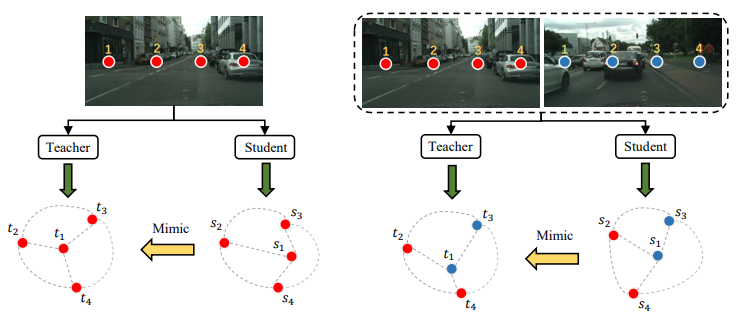
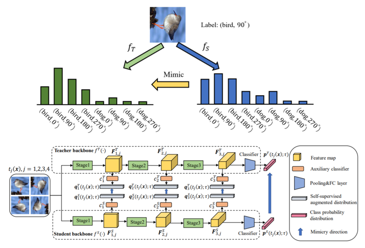
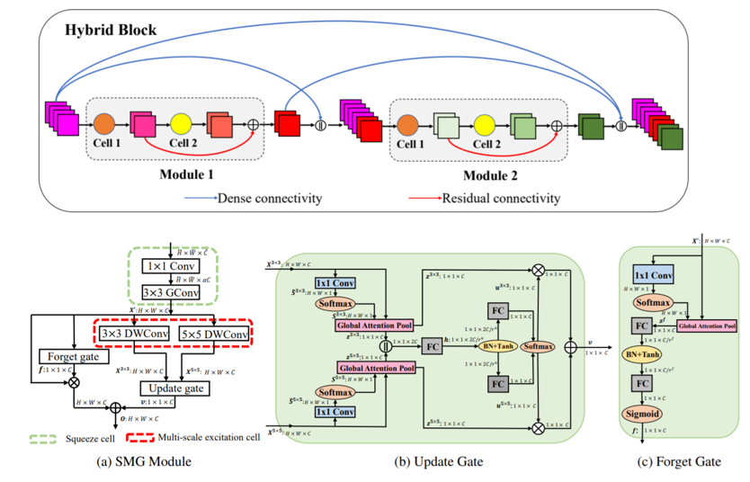
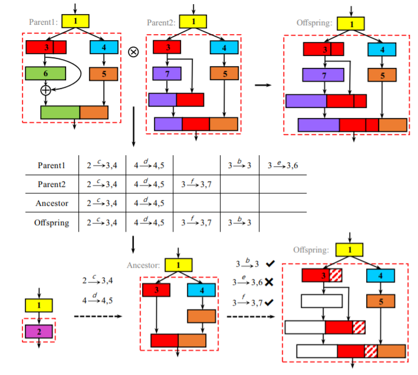

Selected Publications
2022
Localizing Semantic Patches for Accelerating Image Classification
Chuanguang Yang, Zhulin An, Yongjun Xu
in IEEE International Conference on Multimedia and Expo (ICME-2022)
CCF-B, Acceptance rate: 383/1300=29.5%
We propose an interpretable AnchorNet to localize semantic patches for accelerating image classification.
Chuanguang Yang, Zhulin An, Yongjun Xu
in IEEE International Conference on Multimedia and Expo (ICME-2022)
We propose an interpretable AnchorNet to localize semantic patches for accelerating image classification.

Cross-Image Relational Knowledge Distillation for Semantic Segmentation
Chuanguang Yang, Helong Zhou, Zhulin An, Xue Jiang, Yongjun Xu, Qian Zhang
in IEEE/CVF Conference on Computer Vision and Pattern Recognition (CVPR-2022)
CCF-A, Acceptance rate: 2067/8161=25.3%
We propose cross-Image relational knowledge distillation for semantic segmentation.
Chuanguang Yang, Helong Zhou, Zhulin An, Xue Jiang, Yongjun Xu, Qian Zhang
in IEEE/CVF Conference on Computer Vision and Pattern Recognition (CVPR-2022)
We propose cross-Image relational knowledge distillation for semantic segmentation.
Mutual Contrastive Learning for Visual Representation Learning
Chuanguang Yang, Zhulin An, Linhang Cai, Yongjun Xu
in AAAI Conference on Artificial Intelligence (AAAI-2022 Oral)
CCF-A; Acceptance Rate: 1349/9020=15.0%; Oral Rate: Top 5%
We propose a simple yet effective mutual contrastive learning approach to learn better feature representations for both supervised and self-supervised image classification.
Chuanguang Yang, Zhulin An, Linhang Cai, Yongjun Xu
in AAAI Conference on Artificial Intelligence (AAAI-2022 Oral)
We propose a simple yet effective mutual contrastive learning approach to learn better feature representations for both supervised and self-supervised image classification.
Prior Gradient Mask Guided Pruning-aware Fine-tuning
Linhang Cai, Zhulin An, Chuanguang Yang, Yongjun Xu
in AAAI Conference on Artificial Intelligence (AAAI-2022)
CCF-A; Acceptance Rate: 1349/9020=15.0%
We proposed a prior gradient mask guided pruning-aware fine-tuning framework to accelerate CNNs for image classification.
Linhang Cai, Zhulin An, Chuanguang Yang, Yongjun Xu
in AAAI Conference on Artificial Intelligence (AAAI-2022)
We proposed a prior gradient mask guided pruning-aware fine-tuning framework to accelerate CNNs for image classification.
2021

Hierarchical Self-supervised Augmented Knowledge Distillation
Chuanguang Yang, Zhulin An, Linhang Cai, Yongjun Xu
in International Joint Conference on Artificial Intelligence (IJCAI-2021)
CCF-A; Acceptance Rate: 587/4204=13.9%
[Paper] [Code]
We propose a strong self-supervised augmented knowledge distillation method from hierarchical feature maps for image classification.
Chuanguang Yang, Zhulin An, Linhang Cai, Yongjun Xu
in International Joint Conference on Artificial Intelligence (IJCAI-2021)
[Paper] [Code]
We propose a strong self-supervised augmented knowledge distillation method from hierarchical feature maps for image classification.
Multi-View Contrastive Learning for Online Knowledge Distillation
Chuanguang Yang, Zhulin An, Yongjun Xu
in IEEE International Conference on Acoustics, Speech and Signal Processing (ICASSP-2021)
CCF-B; Acceptance Rate: 1734/3610=48.0%
[Paper] [Code]
We propose multi-view contrastive learning to perform online knowledge distillation for image classification.
Chuanguang Yang, Zhulin An, Yongjun Xu
in IEEE International Conference on Acoustics, Speech and Signal Processing (ICASSP-2021)
[Paper] [Code]
We propose multi-view contrastive learning to perform online knowledge distillation for image classification.
2020
DRNet: Dissect and Reconstruct the Convolutional Neural Network via Interpretable Manners
Xiaolong Hu, Zhulin An, Chuanguang Yang, Hui Zhu, Kaiqaing Xu, Yongjun Xu
in European Conference on Artificial Intelligence (ECAI-2020)
CCF-B; Acceptance Rate: 365/1363=26.8%
[Paper]
We propose an interpretable manner to dynamically run channels for sub-class image classification.
Xiaolong Hu, Zhulin An, Chuanguang Yang, Hui Zhu, Kaiqaing Xu, Yongjun Xu
in European Conference on Artificial Intelligence (ECAI-2020)
[Paper]
We propose an interpretable manner to dynamically run channels for sub-class image classification.

Gated Convolutional Networks with Hybrid Connectivity for Image Classification
Chuanguang Yang, Zhulin An, Hui Zhu, Xiaolong Hu, Kun Zhang, Kaiqiang Xu, Chao Li, Yongjun Xu
in AAAI Conference on Artificial Intelligence (AAAI-2020)
CCF-A; Acceptance Rate: 1591/7737=20.6%
[Paper] [Code]
We propose a new network architecture called HCGNet equipped with novel hybrid connectivity and gated mechanisms for image classification.
Chuanguang Yang, Zhulin An, Hui Zhu, Xiaolong Hu, Kun Zhang, Kaiqiang Xu, Chao Li, Yongjun Xu
in AAAI Conference on Artificial Intelligence (AAAI-2020)
[Paper] [Code]
We propose a new network architecture called HCGNet equipped with novel hybrid connectivity and gated mechanisms for image classification.
2019

EENA: Efficient Evolution of Neural Architecture
Hui Zhu, Zhulin An, Chuanguang Yang, Kaiqiang Xu, Erhu Zhao, Yongjun Xu
in International Conference on Computer Vision Workshops (ICCVW-2019)
CCF-A Workshop
[Paper]
We propose an efficient evolution algorithm for neural architecture search for image classification.
Hui Zhu, Zhulin An, Chuanguang Yang, Kaiqiang Xu, Erhu Zhao, Yongjun Xu
in International Conference on Computer Vision Workshops (ICCVW-2019)
[Paper]
We propose an efficient evolution algorithm for neural architecture search for image classification.
Activities
- 2022.3.11 Invited talk of our CVPR-2022 paper "Cross-image Relational Knowledge Distillation for Semantic Segmentation" at Horizon Robotics
- 2022.1.21 Invited talk about "Self-supervised Contrastive Learning" at Horizon Robotics
- 2021.9.16 Invited talk of our IJCAI-2021 paper "Hierarchical Self-supervised Augmented Knowledge Distillation" by AI Drive and Paper weekly
- 2020.6.21 Invited talk of our AAAI-2020 paper "Gated Convolutional Networks with Hybrid Connectivity for Image Classification" by Student Forum on Frontiers of Artificial Intelligence (SFFAI)
Review Services
Conference: ACM MM-2021, AAAI-2022, CVPR-2022, ACM MM-2022, ECCV-2022
Journal: Applied Artificial Intelligence
Journal: Applied Artificial Intelligence